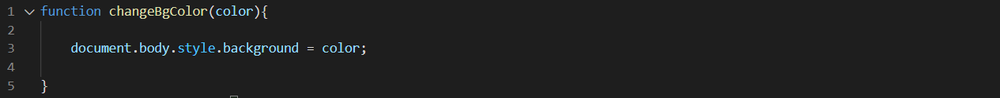
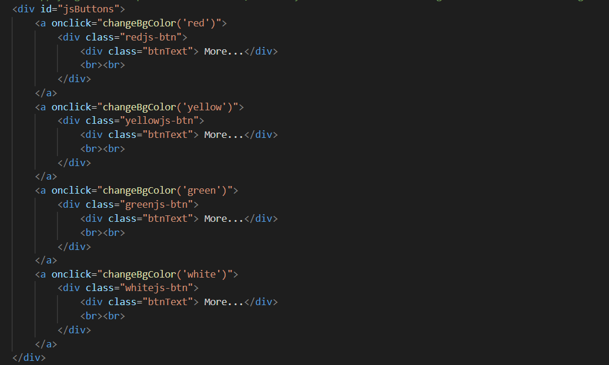

What is JavaScript?
It's a high-level programming language. created, initially, to be executed in web browsers and handle webpages behaviors. With it's scripts it is possible to include, in a static page, dinamin elements like maps, forms, numerical operations, animations, interactive graphics and much more.
JavaScript is one of the most important technologies for the front-end, and together with HTML and CSS it covers pretty much all the requirements of the development of a complete webpage, dinamic, with high-performance.
JavaScript, originally, is a client-side programming language, in other words, it is executed in the clients side, more especifically in the browser used by the client. This means that all the actions taken are processed in the computer of who uses it, with no necessities of sending it to any other enviroment. Because no information is sent to a external server, the responses are immediates.
Below we can see how JavaScript can be applied to change the color of the background of a webpage using buttons:
this is the JavaScript sample, now it will be displayed how it was implemented in the HTML document:
Here we can see that the JavaScript function is called in the onclick attribute, meaning that when the button is click the function will be applied, in this case, the buttons will change the background color of the Page.
Now press the buttons below and see magic happens!